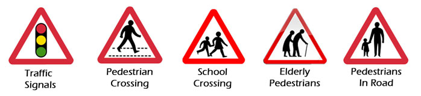

There are five types of pedestrian crossing in the UK. They are:
Zebra crossing- Pedestrian priority
Pelican crossing- Light controlled-timed-flashing amber phase
Puffin crossing- Light controlled-uses sensor
Toucan crossing- For pedestrians and cyclists
Pegasus crossing- For pedestrians and horse riders
Approaching Crossings
Pedestrian crossings feature frequently on our road systems, particularly in built up areas. It is important to approach each one carefully, preparing yourself to respond to pedestrian activity or light changes, which can sometimes be unexpected.
Look ahead to recognise crossings as early as possible. The beacons on each side of a zebra crossing are designed to be highly visible and at other types the traffic lights can usually be seen early. Be careful though, as other traffic, particularly large vehicles, parked or queued ahead, can block the view of a crossing.
Be alert to the dangers these signs warn of:

Once you’ve recognised a crossing ahead, scan the pavements for pedestrians using, waiting or about to use it.
Check your mirrors for following traffic. If the vehicle behind is very close, use extra caution. If you need to stop, then slow down early and gently, showing your brake lights. If you’re not sure, then again slow down early and gently, getting down to a speed from which you could stop smoothly if needed. This may simply be a case of releasing the gas and covering the brake temporarily.
So, in brief, approaching crossings, you should:
- Look ahead to recognise them early
- Scan for pedestrians using, waiting or about to use them
- Check mirrors for proximity of following traffic
- Slow down or stop as necessary